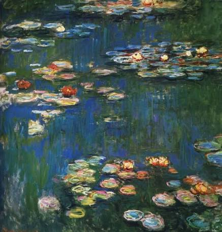

Моне интересен мне тем, что он не пытался нарисовать каждый листик идеально. Он рисовал так, как видит глаз в первый момент — быстрыми мазками. Я читала, что он мог рисовать один и тот же стог сена целый день, просто чтобы показать, как меняется свет. Это кажется мне невероятным терпением и любовью к природе.
